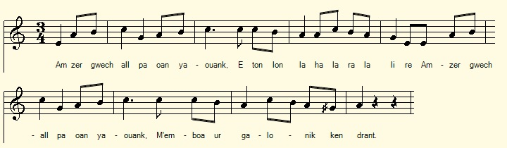
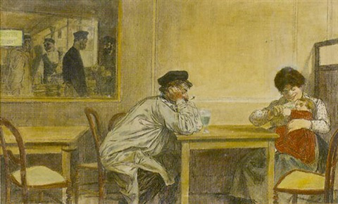

1° Chanson de la mariée
Son ar plac'h dimezet
A married woman's song
Chant tiré du 2ème Carnet de collecte de La Villemarqué (p. 18).
Mélodie
"Amzer gwechall pa oan yaouank"
Arrangement Christian Souchon (c) 2019
|
A propos de la mélodie La mélodie ci-dessus accompagne une chanson vannetaise qui reproduit en partie le chant noté par La Villemarqué. Une autre version vannetaise de ce chant de "maumariée" a été interprêtée par Cédric Binet sur Radio Bro Gwened pour l'émission "Liv an amzer: Kanit ar pezh a garit" d'Andrée Le Gall. On trouvera cet enregistrement en bas de page. C'est le fond sonore de la présente page. |
About the tune The above tune accompanies a Vannes dialect song which can be partly paralleled with the song noted by La Villemarqué. Another Vannes version of this "maumariée" song (about the grievances of an unhappy wife) was interpreted by Cédric Binet on Radio Bro Gwened for the program "Liv an amzer: Kanit ar pezh a garit" by Andrée Le Gall. This recording is included at the bottom of the page. It is the sound background of this page. |
|
BREZHONEG (Stumm KLT) P. 18 Ar plac'h dimezet d'un evour gwin 1. Amzer gwechall pe oan yaouank M'em- boa ur galonik ken drant. 2. M'em- boa ur galonik ken drant N'em be ket roet evit arc'hant 3. Evit arc'hant nag evit aour N'em be ket roet va c'halon baour (bis) 4. Ken verr an dour d'am daoulagad Pa glevan 'r c'havell luskellaat. 5. Gwel evañ gwin gwenn Klev er vandenn sonerien. 6. Gwechall pa ien d'ar pardonnioù M'em-befe per hag avaloù. 7. Breman pa m'on dimezet Per hag avalou n'eus ket. 8. D'ar pardoniou n'ez in ket mui Matez on bremañ en ti 19 / 10 "Le mari de Scaer" par Loiz Jourdren deus/de Koré (Coray) Keré . 64 KLT gant Christian Souchon |
FRANCAIS P. 18 Chanson de la mariée 1. Au temps jadis quand j'étais jeune J'avais un petit coeur bien gai. 2. J'avais un petit cur bien gai Ne l'eusse pour argent donné 3. Pour de l'argent ni pour de l'or Je n'eusse cédé ce trésor (bis) 4. Et j'ai donc les larmes aux yeux Berçant l'enfant, faute de mieux : 5. Tu les vois boire du vin blanc ? Et les sonneurs, tu les entends ? 6. Autrefois j'allais aux pardons : Poires et pommes à foison ! 7. C'est bien fini : je suis mariée : Poires et pommes, envolées ! 8. Et je ne vais plus aux pardons Je suis servante en ma maison 19/10 « Le mari de Scaër » Par Louis Jourdren de Coray Cordonnier (?), 64 ans. Traduction Christian Souchon (c) 2019 |
ENGLISH Page 105/55 The Married Woman 's Song 1. Formerly when I was young I had such a happy heart 2. I had such a happy heart I would not have given it for money. 3. Neither for money nor for gold Would I have given my poor heart etc. 4. So that tears come to my eyes, When I stay at home rocking a cradle. I'd prefer to drink white wine, While listening to the pipers. 5. Formerly when I went to the fair I was given pears and apples. 6. Now that I'm married I do not have pears or apples anymore. 7. I will not go to the fair anymore I am now a servant at home. |
2° Les plaintes de la femme du buveur
The grievances of the drunkard's wife
Abbé François Cadic, "Paroisse bretonne de Paris", N°45, juin 1905, page 45
|
BREZHONEG (Yezh Gwened) 1. Er guéh aral a pa oen iouank Me boé ur galon franjemant 2. Me boé ur galonik ker gaï Vel ur boked roz a viz maï 3. Mé boé ur galonik ker glan Bé ket hon reit aveit argant 4. Me més éon reit d'un ivour guin E ia d'en davarn bep mitin 5. E ia d'en davarn mitin mat E za d'er gér noz devéhat 6. E za d'er gér noz devéhat Gemée er vah de me filat 7. Me skarh ir mèz a di me zad Léh ma oen bet desaùet mad. 8. A pe frintan 'n dousén uieu Eon devé dek he me bé deu. 9. A pe lakan 'n tam kig ir pod Me bé en askorn 'veit me lod 10. Ha hoah e nemb gavan erhat Pe van in ti d'oh er hrégnat 11. E toul er hi ir goleinnek E ma me gulé de gousket 12. Ha ki me zad vé ket kontant Lemel geton é gomenand |
FRANCAIS 1. Au temps jadis quand j'étais jeune J'avais un petit coeur sans soucis. 2. J'avais un petit coeur bien gai, Un bouquet de roses de mai 3. J'avais un petit coeur si pur Je ne l'aurais donné pour de l'argent 4. Je l'ai donné à un buveur de vin Qui va au cabaret chaque matin 5. Il y va de bon matin Et il rentre tard le soir 6. Et il rentre tard le soir Et il me bat avec un baton 7. Il me chasse de la maison Où l'on m'avait si bien élevée 8. Et quand je fais frire une douzaine d'oeufs Il en a dix et moi deux. 9. Et quand je sers un morceau de viande Moi j'ai droit à un os 10. Et encore, je m'estime heureuse Quand je peux le ronger dans la maison 11. Dans la niche du chien sur sa paille Est le lit où je dors 12. Et le chien n'est pas content Qu'on lui dispute son logement |
ENGLISH 1.In the old days when I was young I had a little heart without worries. 2. I had a happy little heart, A bouquet of roses in May 3. I had a little heart so pure I would not have given it for money 4. I gave it to a wine drinker Who goes to the cabaret every morning 5. He gpes there early in the morning And he comes back late at night 6. And he comes back late at night And he beats me with a stick 7. He's chasing me out of the house Where I was so well brought up 8. And when I fry a dozen eggs He's ten and I two. 9. And when I'm serving a piece of meat I am entitled to a bone 10. And again, I feel happy When I can eat in the house 11. In the dog's kennel on his straw Is the bed where I sleep 12. And the dog is not happy That we dispute his housing. |
3° Amzer gwechall pa oan yaouank
Jadis quand j'étais jeune
Kanet gant Cedric Binet
http://www.radiobreizh.bzh/fr/episode.php?epid=14122 Radio Bro Gwened : Liv an amzer (Andrea Le Gal) - Kanit ar pezh a garit|
BREZHONEG (Yezh Gwened) 1. Amzer gwechall pe oan yaouank M'em- boa ur galon "franjamant" 2. M'em- boa ur galonik ken ge Vel ur boked roz a viz mae 3. N'em be ket roet ma c'halon baour Evit archant nag evit aour 4. Me 'm-eus he roet evit netra D'un evour chistr, debrour bara, 5. Me 'm-eus he roet d'un evour gwin A ya d'an davarn da vintin 6. A ya d'an davarn mintin mat Ez a d'ar ger noz diwezhat 7. Sellit va mamm peseurt buhez! Eo leun ma zi a vugale 8. Pevar war ar bank, pemp er gwele Ha kement-all zo aet gant Doue (KLT gant Christian Souchon) |
FRANCAIS 1. Au temps jadis quand j'étais jeune J'avais un petit coeur sans soucis 2. J'avais un petit coeur bien gai Tout comme une rose de mai 3. Pour de l'argent ni pour de l'or Je n'eusse cédé ce trésor 4. Or, j'en ai fait cadeau pour rien A un buveur de cidre, mangeur de pain 5. A un buveur de vin Qui va à la taverne le matin 6. Va à la taverne de bon matin Rentre à la maison tard le soir. 7. Voyez ma mère la vie que je mène ! Ma maison est pleine de marmots 8. Quatre sur le banc, cinq dans le lit Et autant que Dieu a repris. |
ENGLISH 1. In the old days when I was young I had a little heart without worries 2. I had a good little heart Like a rose in May 3. For money and gold I did not give up this treasure 4. But I made a gift for nothing To a cider drinker, bread eater 5. To a wine drinker Who goes to the tavern in the morning 6. Go to the tavern early in the morning Go home late at night. 7. See my mother the life I lead! My house is full of brats 8. Four on the bench, five in the bed And as much as God has taken over. |
NOTE
| [1] Des informations sur les chants de maumariées sont données à propos du chant "Ar Boulom Kozh" | [1] For information on "Unhappy wife songs" see "Ar Boulom Kozh". |

- "Le buveur d'asinthe" par Jean-François Raffaëlli (1850-1924)
"Amzer gwechall" interprêté par Cédric Binet